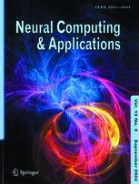

ALA 2024
6 & 7 May 2024, Auckland, NZ
News
- 14 May 2024: Best paper is announced in the awards.
- 1 May 2024: We are excited to announce Ann Nowé as a keynote speaker for ALA 2024.
- 28 April 2024: Camera-ready copies of all papers are viewable in the program.
- 28 April 2024: The program for the workshop is now available.
- 25 April 2024: We are excited to announce Michael Wellman as a keynote speaker for ALA 2024.
- 22 April 2024: We are excited to announce Marc Lanctot as a keynote speaker for ALA 2024.
- 19 April 2024: The list of accepted papers is now online.
- 21 Mar 2024: The deadline for the camera-ready version of accepted papers has been extended to 19 Apr 2024
- 1 Mar 2024: The final decisions for ALA 2024 will be slightly delayed. Due to the overall lower number of submissions this year, the Workshop on Reinforcement Learning in Games will be merged into ALA and unifying the review process will take a few more days. Thanks for your patience!
- 9 Feb 2024: ALA 2024 submission deadline has been further extended to 12 Feb 2024 23:59 UTC
- 29 Jan 2024: ALA 2024 submission deadline has been extended to 9 Feb 2024 23:59 UTC
- 4 Dec 2023: ALA 2024 Website goes live!
ALA 2024 - Workshop at AAMAS 2024
Adaptive and Learning Agents (ALA) encompasses diverse fields such as Computer Science, Software Engineering, Biology, as well as Cognitive and Social Sciences. The ALA workshop will focus on agents and multiagent systems which employ learning or adaptation.
This workshop is a continuation of the long running AAMAS series of workshops on adaptive agents, now in its sixteenth year. Previous editions of this workshop may be found at the following urls:
- ALA-23
- ALA-22
- ALA-21
- ALA-20
- ALA-19
- ALA-18
- ALA-17
- ALA-16
- ALA-15
- ALA-14
- ALA-13
- ALA-12
- ALA-11
- ALA-10
- ALA-09
- ALAMAS+ALAg-08
- ALAg-07
- Earlier editions
The goal of this workshop is to increase awareness of and interest in adaptive agent research, encourage collaboration and give a representative overview of current research in the area of adaptive and learning agents and multi-agent systems. It aims at bringing together not only scientists from different areas of computer science (e.g. agent architectures, reinforcement learning, evolutionary algorithms) but also from different fields studying similar concepts (e.g. game theory, bio-inspired control, mechanism design).
The workshop will serve as an inclusive forum for the discussion of ongoing or completed work covering both theoretical and practical aspects of adaptive and learning agents and multi-agent systems.
This workshop will focus on all aspects of adaptive and learning agents and multi-agent systems with a particular amphasis on how to modify established learning techniques and/or create new learning paradigms to address the many challenges presented by complex real-world problems. The topics of interest include but are not limited to:
- Novel combinations of reinforcement and supervised learning approaches
- Integrated learning approaches using reasoning modules like negotiation, trust, coordination, etc..
- Supervised and semi-supervised multi-agent learning
- Reinforcement learning (single- and multi-agent)
- Novel deep learning approaches for adaptive single- and multi-agent systems
- Multi-objective optimisation in single- and multi-agent systems
- Planning (single- and multi-agent)
- Reasoning (single- and multi-agent)
- Distributed learning
- Adaptation and learning in dynamic environments
- Evolution of agents in complex environments
- Co-evolution of agents in a multi-agent setting
- Cooperative exploration and learning to cooperate and collaborate
- Learning trust and reputation
- Communication restrictions and their impact on multi-agent coordination
- Design of reward structure and fitness measures for coordination
- Scaling learning techniques to large systems of learning and adaptive agents
- Emergent behaviour in adaptive multi-agent systems
- Game theoretical analysis of adaptive multi-agent systems
- Neuro-control in multi-agent systems
- Bio-inspired multi-agent systems
- Human-in-the-loop learning systems
- Applications of adaptive and learning agents and multi-agent systems to real world complex systems
Extended and revised versions of papers presented at the workshop will be eligible for inclusion in a journal special issue (see below).
Important Dates
Submission Details
Papers can be submitted through OpenReview.
We invite submission of original work, up to 8 pages in length (excluding references) in the ACM proceedings format (i.e. following the AAMAS formatting instructions). This includes work that has been accepted as a poster/extended abstract at AAMAS 2024. Keeping with previous ALA guidelines, papers are limited to 8 pages plus references. Additionally, we welcome submission of preliminary results, i.e. work-in-progress, as well as visionary outlook papers that lay out directions for future research in a specific area, both up to 6 pages in length, although shorter papers are very much welcome, and will not be judged differently. Finally, we also accept recently published journal papers in the form of a 2 page abstract.
Furthermore, for submissions that were rejected or accepted as extended abstracts at AAMAS, authors need to also append the received reviews and a pdfdiff.
All submissions will be peer-reviewed (doubl-blind). Accepted work will be allocated time for poster and possibly oral presentation during the workshop. In line with AAMAS, the workshop will be fully offline. Extended versions of original papers presented at the workshop will also be eligible for inclusion in a post-proceedings journal special issue.
When preparing your submission for ALA 2024, please be sure to remove the AAMAS copyright block, citation information and running headers. You leave the submission id in the AAMAS template empty as we use OpenReview instead of easy chair. Please replace the AAMAS copyright block in the main.tex file from the AAMAS template with the following:
\setcopyright{none}
\acmConference[ALA '24]{Proc.\@ of the Adaptive and Learning Agents Workshop (ALA 2024)}
{May 6-7, 2024}{Auckland, \url{https://ala2024.github.io/}}{Avalos, Milec, M\"uller, Wang, Yates (eds.)}
\copyrightyear{2024}
\acmYear{2024}
\acmDOI{}
\acmPrice{}
\acmISBN{}
\settopmatter{printacmref=false}
For the submission of the camera-ready paper make sure to submit the deanonymized version with the replaced copyright block above.
Journal Special Issue
We are delighted to announce that extended versions of all original contributions at ALA 2024 will be eligible for inclusion in a special issue of the Springer journal Neural Computing and Applications (Impact Factor 6.0). The deadline for submitting extended papers will be 15 November 2024.
For further information please contact the workshop organizers and Patrick Mannion.
Program
All times are presented in local Auckland time.
Monday May 6
| Welcome & Opening Remarks | |
| 09:00-10:00 | Session I - Chair: Connor Yates |
| 09:00-10:00 | Invited Talk: Marc Lanctot (Deepmind) Game-Theoretic Approaches to Adaptive Learning Agents in Strategic Environments |
| 10:00-10:45 | Coffee Break |
| 10:45-12:30 | Session II - Chair: David Milec |
| 10:45-11:05 | Long Talk: Bram M. Renting, Holger Hoos, Catholijn M Jonker Multi-Agent Meeting Scheduling: A Negotiation Perspective |
| 11:05-11:25 | Long Talk: Pascal Van der Vaart, Neil Yorke-Smith, Matthijs T. J. Spaan Bayesian Ensembles for Exploration in Deep Q-Learning |
| 11:25-11:45 | Long Talk: Hei Yi Mak, Flint Xiaofeng Fan, Luca A Lanzendörfer, Cheston Tan, Wei Tsang Ooi, Roger Wattenhofer CAESAR: Enhancing Federated RL in Heterogeneous MDPs through Convergence-Aware Sampling with Screening |
| 11:45-12:05 | Long Talk: Sunghoon Hong, Whiyoung Jung, Deunsol Yoon, Kanghoon Lee, Woohyung Lim Agent-Oriented Centralized Critic for Asynchronous Multi-Agent Reinforcement Learning |
| 12:05-12:25 | Long Talk: Nicole Orzan, Erman Acar, Davide Grossi, Roxana Rădulescu Learning in Public Goods Games with Non-Linear Utilities: a Multi-Objective Approach |
| 12:30-14:00 | Lunch Break |
| 14:00-16:00 | Session III & Poster Session - Chair: Fan Xiaofeng |
| 14:00-14:20 | Long Talk: Zun Li, Michael Wellman A Meta-Game Evaluation Framework for Deep Multiagent Reinforcement Learning |
| 14:20-14:40 | Long Talk: Simone Drago, Marco Mussi, Marcello Restelli, Alberto Maria Metelli Intermediate Observations in Factored-Reward Bandits |
| 14:40-14:55 | Short Talks, 5 minutes each in order:
|
| 15:00-16:00 | Poster Session A |
| 16:00-16:30 | Coffee Break |
| 16:30-17:30 | Session IV - Chair: Connor Yates |
| 16:30-17:30 | Invited Talk: Michael Wellman Artificial Intelligence and its Implications for Financial Markets |
| ~18:00 | Social Gathering Galbraith's Alehouse (Google Maps) |
Tuesday May 7
| 09:00-10:00 | Session V - Chair: Connor Yates |
| 09:00-10:00 | Invited Talk: Ann Nowé Centralised learning, decentralised execution. How did we get there? |
| 10:00-10:45 | Coffee Break |
| 10:45-12:30 | Session VI - Chair: Caroline Wang |
| 10:45-11:05 | Long Talk: Marc Lanctot, John Schultz, Neil Burch, Max Olan Smith, Daniel Hennes, Thomas Anthony, Julien Perolat Population-based Evaluation in Repeated Rock-Paper-Scissors as a Benchmark for Multiagent Reinforcement Learning |
| 11:05-11:25 | Long Talk: Jérôme Botoko Ekila, Jens Nevens, Lara Verheyen, Katrien Beuls, Paul Van Eecke Decentralised Emergence of Robust and Adaptive Linguistic Conventions in Populations of Autonomous Agents Grounded in Continuous Worlds |
| 11:25-11:45 | Long Talk: Alexandra Cimpean, Catholijn M Jonker, Pieter Jules Karel Libin, Ann Nowe A Group And Individual Aware Framework For Fair Reinforcement Learning |
| 11:45-12:05 | Long Talk: Jonathan G. Faris, Conor F. Hayes, Andre R Goncalves, Kayla G. Sprenger, Daniel faissol, Brenden K. Petersen, Mikel Landajuela, Felipe Leno da Silva Pareto Front Training For Multi-Objective Symbolic Optimization |
| 12:05-12:25 | Long Talk: Jérôme Arjonilla, Tristan Cazenave and Abdallah Saffidine Perfect Information Monte Carlo with postponing reasoning |
| 12:30-14:00 | Lunch Break |
| 14:00-15:45 | Session VII & Poster Session - Chair: Gaurav Dixit |
| 14:00-14:30 | Short Talks, 5 minutes each in order:
|
| 14:30-14:50 | Long Talk: Radovan Haluška and Martin Schmid Learning to Beat ByteRL: Exploitability of Collectible Card Game Agents |
| 15:00-16:00 | Poster Session B |
| 16:00-16:30 | Coffee Break |
| 16:30-17:30 | General Discussion |
| 17:30 | Awards & Closing Remarks |
Poster Session A - Monday May 6 15:00-16:00
All papers presented on day 1.
Poster Session B - Tuesday May 7 15:00-16:00
All papers presented on day 2.
Accepted Papers
| Paper # | Authors | Title |
|---|---|---|
| 2 | Ram Rachum, Yonatan Nakar, William Tomlinson, Nitay Alon, Reuth Mirsky | Emergent Dominance Hierarchies in Reinforcement Learning Agents |
| 3 | Simone Drago, Marco Mussi, Marcello Restelli, Alberto Maria Metelli | Intermediate Observations in Factored-Reward Bandits |
| 4 | Kyle Crandall, Connor Yates, Corbin Wilhelmi | Lyapunov Guarantees for Learned Policies |
| 5 | Marc Lanctot, John Schultz, Neil Burch, Max Olan Smith, Daniel Hennes, Thomas Anthony, Julien Perolat | Population-based Evaluation in Repeated Rock-Paper-Scissors as a Benchmark for Multiagent Reinforcement Learning |
| 7 | Pascal Van der Vaart, Neil Yorke-Smith, Matthijs T. J. Spaan | Bayesian Ensembles for Exploration in Deep Q-Learning |
| 9 | Jérôme Botoko Ekila, Jens Nevens, Lara Verheyen, Katrien Beuls, Paul Van Eecke | Decentralised Emergence of Robust and Adaptive Linguistic Conventions in Populations of Autonomous Agents Grounded in Continuous Worlds |
| 10 | Hei Yi Mak, Flint Xiaofeng Fan, Luca A Lanzendörfer, Cheston Tan, Wei Tsang Ooi, Roger Wattenhofer | CAESAR: Enhancing Federated RL in Heterogeneous MDPs through Convergence-Aware Sampling with Screening |
| 11 | Sunghoon Hong, Whiyoung Jung, Deunsol Yoon, Kanghoon Lee, Woohyung Lim | Agent-Oriented Centralized Critic for Asynchronous Multi-Agent Reinforcement Learning |
| 13 | David Milec, Ondrej Kubicek, Viliam Lisý | Continual Depth-limited Responses for Computing Counter-strategies in Sequential Games |
| 14 | Rolando Fernandez, Garrett Warnell, Derrik E. Asher, Peter Stone | Multi-Agent Synchronization Tasks |
| 15 | Nicole Orzan, Erman Acar, Davide Grossi, Roxana Rădulescu | Learning in Public Goods Games with Non-Linear Utilities: a Multi-Objective Approach |
| 16 | Argha Boksi, Balaraman Ravindran | Inter-agent Transfer Learning in Communication-constrained Settings : A Student Initiated Advising Approach |
| 17 | Timothy Flavin, Sandip Sen | A Bayesian Approach to Learning Command Hierarchies for Zero-Shot Multi-Agent Coordination |
| 18 | Brian Burns, Aravind Sundaresan, Pedro Sequeira, Vidyasagar Sadhu | Learning Sensor Control for Information Gain in Dynamic, Partially Observed and Sparsely Sampled Environments |
| 22 | Alexandra Cimpean, Catholijn M Jonker, Pieter Jules Karel Libin, Ann Nowe | A Group And Individual Aware Framework For Fair Reinforcement Learning |
| 23 | Bram M. Renting, Holger Hoos, Catholijn M Jonker | Multi-Agent Meeting Scheduling: A Negotiation Perspective |
| 24 | Arnau Mayoral Macau, Manel Rodriguez-Soto, Maite López-Sánchez, Juan Antonio Rodriguez Aguilar, Enrico Marchesini, Alessandro Farinelli | An approximate process for designing ethical environments with multi-agent reinforcement learning |
| 25 | Jonathan G. Faris, Conor F. Hayes, Andre R Goncalves, Kayla G. Sprenger, Daniel faissol, Brenden K. Petersen, Mikel Landajuela, Felipe Leno da Silva | Pareto Front Training For Multi-Objective Symbolic Optimization |
| 28 | Zun Li, Michael Wellman | A Meta-Game Evaluation Framework for Deep Multiagent Reinforcement Learning |
| 29 | Jérôme Arjonilla, Tristan Cazenave and Abdallah Saffidine | Enhancing Reinforcement Learning Through Guided Search |
| 32 | Jérôme Arjonilla, Tristan Cazenave and Abdallah Saffidine | Perfect Information Monte Carlo with postponing reasoning |
| 33 | Radovan Haluška and Martin Schmid | Learning to Beat ByteRL: Exploitability of Collectible Card Game Agents |
Invited Talks
Marc Lanctot
Affiliation: Google Deepmind
Title: Game-Theoretic Approaches to Adaptive Learning Agents in Strategic Environments
Abstract: In this talk, I will motivate the importance of adaptation in general environments and the role that game theory could play along the way. I will briefly talk about different ways of assessing the performance of agents that have been adopted by the community. Then, I will outline a few potential environments and evaluation schemes that could be used for such purposes. I will then talk in detail about a specific direction that embraces Meta-RL and Bayesian reasoning in a practical way, through the use of game-theoretic training regimes and applications to multiplayer games with partial observability. As a case study, I will show recent results on agents that have learned to play negotiation games through combined reinforcement learning and search, as well as observations from their interactions with human participants.
Michael Wellman

Affiliation: University of Michigan
Title: Artificial Intelligence and its Implications for Financial Markets
Abstract: The rapid advancement of surprisingly capable AI is raising questions about AI’s impact on virtually all aspects of our economy and society. The nexus of AI and Finance is especially salient, building on the impact AI has already had on trading and other financial domains. New AI developments could exacerbate market manipulation, and otherwise create loopholes in regulatory regimes. We need improved ways to anticipate AI impacts and evaluate capabilities of advanced interactive AI.
Bio: Michael P. Wellman is Professor and Division Chair of Computer Science & Engineering at the University of Michigan. He received a PhD from the Massachusetts Institute of Technology in 1988 for his work in qualitative probabilistic reasoning and decision-theoretic planning. From 1988 to 1992, Wellman conducted research in these areas at the USAF’s Wright Laboratory. For the past 30 years, his research has focused on computational market mechanisms and game-theoretic reasoning methods, with applications in electronic commerce, finance, and cyber-security. As Chief Market Technologist for TradingDynamics, Inc., he designed configurable auction technology for dynamic business-to-business commerce. Wellman previously served as Chair of the ACM Special Interest Group on Electronic Commerce (SIGecom), and as Executive Editor of the Journal of Artificial Intelligence Research. He is a Fellow of the Association for the Advancement of Artificial Intelligence and the Association for Computing Machinery.
Ann Nowé
Affiliation:Vrije Universiteit Brussel
Title: Centralised learning, decentralised execution. How did we get there?
Bio: Ann Nowé graduated from the University of Ghent in 1987, where she studied mathematics with optional courses in computer science. She then became research assistant at the University of Brussels where she finished her PhD in 1994 in collaboration with Queen Mary and Westfield College, University of London. The subject of her PhD is located in the intersection of Computer Science (A.I.), Control Theory (Fuzzy Control) and Mathematics (Numerical Analysis, Stochastic Approximation). After a period of 3 years as senior research assistant at the VUB, she became a Postdoctoral Fellow of the Fund for Scientific Research-Flanders (F.W.O.). Nowadays, She is a professor both in the Computer Science Department of the faculty of Sciences as in the Computer Science group of the Engineering Faculty.
Awards
Best Paper Award
We are pleased to announce the best paper of ALA 2024 is A Meta-Game Evaluation Framework for Deep Multiagent Reinforcement Learning, by Zun Li and Michael Wellman!
Runner Up Best Paper Award
We are pleased to announce the runner up for the best paper of ALA 2024 is Learning in Public Goods Games with Non-Linear Utilities: a Multi-Objective Approach, by Nicole Orzan, Erman Acar, Davide Grossi, and Roxana Rădulescu!
Programe Committee
- Adrian Agogino, University of Texas, Austin, USA
- Lucas Nunes Alegre, Federal University of Rio Grande do Sul, BRA
- Hicham Azmani, Vrije Universiteit Brussel, BEL
- Alexandra Cimpean, Vrije Universiteit Brussel, BEL
- Valentin Colliard, LIP6, FRA
- Elena Congeduti, Delft University of Technology, NLD
- Kyle Crandall, US Naval Research Lab, USA
- Jiaxun Cui, The University of Texas at Austin, USA
- Ryan D'Orazio, Université de Montréal , CAN
- Gaurav Dixit, Oregon State University, USA
- Simone Drago, Polytechnic Institute of Milan, ITA
- Ishan Durugkar, Sony AI Inc., USA
- Jérôme Botoko Ekila, Vrije Universiteit Brussel, BEL
- Flint Xiaofeng Fan, National University of Singapore, SGP
- Jonathan G. Faris, University of Colorado at Boulder, USA
- Florian Felten, University of Luxemburg, LUX
- Rolando Fernandez, University of Texas at Austin, USA
- Timothy Flavin, University of Tulsa, USA
- Tim French, University of Western Australia, AUS
- Julian Garcia, Monash University, AUS
- Conor F. Hayes, Lawrence Livermore National Labs, USA
- Whiyoung Jung, LG AI Research, KOR
- Thommen Karimpanal George, Deakin University, AUS
- Sammie Katt, Aalto University, FIN
- Ondřej Kubíček, Czech Technical University , CZE
- Marc Lanctot, Google DeepMind, CAN
- Pieter Libin, Vrije Universiteit Brussel, BEL
- Chuang-Chieh Lin, Tamkang University, TPE
- Viliam Lisý , Czech Technical University in Prague, CZE
- Robert Loftin, University of Sheffield, GBR
- Junlin Lu, National University of Ireland, Galway, IRL
- Simon Lucas, Queen Mary University of London , GBR
- Patrick MacAlpine, Sony AI, USA
- Karl Mason, University of Galway, IRL
- Stephanie Milani, Carnegie Mellon University , USA
- David Milec, Czech Technical University in Prague, CZE
- Nicole Orzan, University of Groningen, NLD
- Bei Peng, University of Liverpool, GBR
- Diego Perez Liebana , Queen Mary University of London , GBR
- Gang Qiao, Siemens Healthineers, USA
- Ram Rachum, Bar-Ilan University, ISR
- Roxana Rădulescu, Vrije Universiteit Brussel, BEL
- Arrasy Rahman, University of Texas at Austin, USA
- Balaraman Ravindran, Indian Institute of Technology Madras, IND
- Bram M. Renting, Leiden University, NLD
- Mathieu Reymond, Vrije Universiteit Brussel, BEL
- Manel Rodriguez-Soto, Artificial Intelligence Research Institute, Spanish National Research Council, ESP
- Diederik Roijers, University of Amsterdam, NLD
- Willem Röpke, Vrije Universiteit Brussel, BEL
- Andries Rosseau, Vrije Universiteit Brussel, BEL
- Sam Sokota, Carnegie Mellon University , USA
- Michal Sustr, AIC FEE CTU , CZE
- Paolo Turrini, University of Warwick, GBR
- Peter Vamplew, Federation University Australia, AUS
- Pascal Van der Vaart, Delft University of Technology, NLD
- Timothy Verstraeten, Vrije Universiteit Brussel, BEL
- Brian Zhang, Carnegie Mellon University , USA
- Weiye Zhao, Carnegie Mellon University , USA
- Junpei Zhong, Hong Kong Polytechnic University, HK
Organization
This year's workshop is organised by:- Raphael Avalos (Vrije Universiteit Brussel, BE)
- David Milec (Czech Technical University in Prague, CZ)
- Henrik Müller (Leibniz University Hannover, DE)
- Caroline Wang (University of Texas at Austin, US)
- Connor Yates (U.S. Naval Research Laboratory, US)
- Enda Howley (University of Galway, IE)
- Daniel Kudenko (University of York, UK)
- Patrick Mannion (University of Galway, IE)
- Ann Nowé (Vrije Universiteit Brussel, BE)
- Sandip Sen (University of Tulsa, US)
- Peter Stone (University of Texas at Austin, US)
- Matthew Taylor (University of Alberta, CA)
- Kagan Tumer (Oregon State University, US)
- Karl Tuyls (University of Liverpool, UK)
{kind=link}